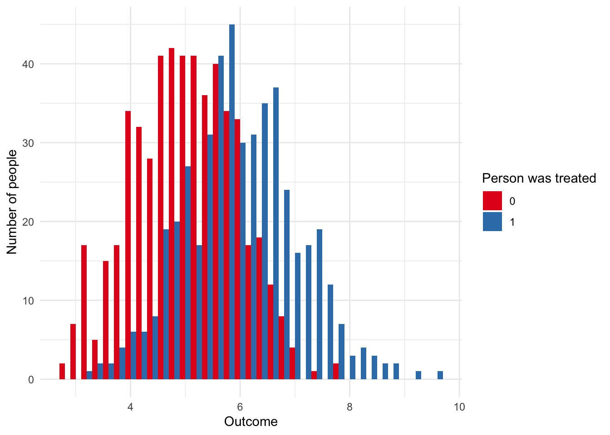

24 A/B testing and RCTs
Required reading
- Fisher, Ronald, 1935, ‘The Design of Experiments’, pp. 20-29, freely available at: https://archive.org/details/in.ernet.dli.2015.502684/page/n33/mode/2up.
- Gertler, Paul, Sebastian Martinez, Patrick Premand, Laura Rawlings, and Christel Vermeersch, ‘Impact Evaluation in Practice’, Chapter 4.
Recommended reading
- Banerjee, Abhijit Vinayak, Esther Duflo, Rachel Glennerster, and Dhruva Kothari, 2010, ‘Improving immunisation coverage in rural India: clustered randomised controlled evaluation of immunisation campaigns with and without incentives’, BMJ, 340, c2220.
- Dablander, Fabian, 2020, “An Introduction to Causal Inference”, PsyArXiv, 13 February, doi:10.31234/osf.io/b3fkw, freely available at: https://psyarxiv.com/b3fkw.
- Deaton, Angus, 2010, ‘Instruments, Randomization, and Learning about Development’, Journal of Economic Literature, vol. 48, no. 2, pp. 424-455.
- Duflo, Esther, Rachel Glennerster, and Michael Kremer, 2007, ‘Using Randomization In Development Economics Research: A Toolkit’, freely available at: https://economics.mit.edu/files/806.
- Gordon, Brett R., Florian Zettelmeyer, Neha Bhargava, and Dan Chapsky, 2019, ‘A Comparison of Approaches to Advertising Measurement: Evidence from Big Field Experiments at Facebook’, Marketing Science, Vol. 38, No. 2, March–April, pp. 193–225.
- Jeffries, Adrianne, Leon Yin, and Surya Mattu, 2020, ‘Swinging the Vote?’, The Markup, 26 February, freely available at: https://themarkup.org/google-the-giant/2020/02/26/wheres-my-email.
- Lewis, Randall A., and David H. Reiley, 2014 ‘Online ads and offline sales: Measuring the effects of retail advertising via a controlled experiment on Yahoo!’, Quantitative Marketing and Economics, Vol 12, pp. 235–266.
- Ryan, A. C., A. R. MacKenzie, S. Watkins, and R. Timmis, 2012, ‘World War II contrails: a case study of aviation‐induced cloudiness’, International journal of climatology, 32, no. 11, pp. 1745-1753.
- Stolberg, Michael, 2006, ‘Inventing the randomized double-blind trial: the Nuremberg salt test of 1835’, Journal of the Royal Society of Medicine, 99, no. 12, pp. 642-643.
- Sveriges Riksbank Prize in Economic Sciences in Memory of Alfred Nobel, 2019, popular science background, freely available at: https://www.nobelprize.org/uploads/2019/10/popular-economicsciencesprize2019-2.pdf.
- Sveriges Riksbank Prize in Economic Sciences in Memory of Alfred Nobel, 2019, scientific background, freely available at: https://www.nobelprize.org/uploads/2019/10/advanced-economicsciencesprize2019.pdf.
- Taddy, Matt, 2019, Business Data Science, Chapter 5.
- Urban, Steve, Rangarajan Sreenivasan, and Vineet Kannan, 2016, ‘It’s All A/Bout Testing: The Netflix Experimentation Platform’, Netflix Technology Blog, 29 April, freely available at: https://netflixtechblog.com/its-all-a-bout-testing-the-netflix-experimentation-platform-4e1ca458c15.
Key concepts/skills/etc
- Treatment and control groups.
- Internal and external validity.
- Average treatment effect.
- Generating simulated datasets.
Key libraries
broomggplot2tidyverse
Key functions/etc
aov()rnorm()sample()t.test()
Pre-quiz
- In your own words, what is the role of randomisation in constructing a counterfactual?
- What is external validity? What is internal validity?
- If we have a dataset named ‘netflix_data’, with the columns ‘person’ and ‘tv_show’ and ‘hours’, (person is a character class uniqueID for every person, tv_show is a character class name of a tv show, and hours is double expressing the number of hours that person watched that tv show). Could you please write some code that would randomly assign people into one of two groups? The data looks like this:
library(tidyverse)
netflix_data <-
tibble(person = c("Rohan", "Rohan", "Monica", "Monica", "Monica", "Patricia", "Patricia", "Helen"),
tv_show = c("Broadchurch", "Duty-Shame", "Broadchurch", "Duty-Shame", "Shetland", "Broadchurch", "Shetland", "Duty-Shame"),
hours = c(6.8, 8.0, 0.8, 9.2, 3.2, 4.0, 0.2, 10.2)
)- What does stratification mean to you (in the context of randomisation)?
- How could you check that your randomisation had been done appropriately?
24.1 Introduction
First a note on Ronald Fisher and Francis Galton. Fisher and Galton are the intellectual grandfathers of much of the work that we cover in this chapter. In some cases it is directly their work, in other cases it is work that built on their contributions. Both of these men believed in eugenics, amongst other things that we would generally find reprehensible today.
This chapter is about experiments. This is a situation in which we can explicitly control and vary some aspects. The advantage of this is that identification should be clear. There is a treatment group that is treated and a control group that is not. These are randomly split. And so if they end up different then it must be because of the treatment. Unfortunately, life is rarely so smooth. Arguing about how similar the treatment and control groups were tends to carry on indefinitely, because our ability to speak to internal validity affects our ability to speak to external validity.
24.2 Motivation
Never forget: if your sampling is in any way non-representative, your observe[d] data is not sufficient for population estimates. You must deal with design, sampling issues, data quality, and misclassification. Otherwise you’ll just be wrong.
Dan Simpson, 30 January 2020.
When Monica and I moved to San Francisco, the Giants immediately won the baseball, and the Warriors began a historic streak. We moved to Chicago and the Cubs won the baseball for the first time in a hundred years. We then moved to Massachusetts, and the Patriots won the Super Bowl again and again and again. Finally, we moved to Toronto, and the Raptors won the basketball. Should a city pay us to live there or could their funds be better spent elsewhere?
One way to get at the answer would be to run an experiment. Make a list of the North American cities with major sports teams, and then roll a dice and send us to live there for a year. If we had enough lifetimes, then we could work it out. But by using A/B testing and experiments we can try to use a larger sample size to work out causality a little more quickly.
24.3 Tea party
Fisher introduced a, now, famous example of an experiment designed to see if a person can distinguish between a cup of tea when the milk was added first, or last (this matters a lot to my father). The set-up is:
- Eight randomly ordered cups of tea.
- Four had tea put in first.
- Four had milk put in first.
- The person has to choose the four that are the same.
- The person knows it’s an experiment.
We’ll now try this experiment.
To decide if the person’s choices were likely to have occured at random or not, we need to think about the probability of this happening by chance. First count the number of successes out of the four that were chosen. There are: \({8 \choose 4} = \frac{8!}{4!(8-4)!}\) 70 possible outcomes.
By chance, there are two ways for the person to be perfectly correct (because we are only asking them to be grouped): correctly identify all the ones that were milk-first (one outcome out of 70) or correctly identify all the ones that were tea-first (one outcome out of 70), so the chance of that is \(2/70 \approx 0.028\). So if the null is that they can’t distinguish, but they correctly separate them all, then at the five-per-cent level, we reject the null!
What if they miss on? Similarly, by chance there are 16 ways for a person to be ‘off-by-one’. Either they think there was one that was milk-first when it was tea-first - there are, \({4 \choose 1}\), four ways this could happen - or they think there was one that was tea-first when it was milk-first - again, there are, \({4 \choose 1}\), four ways this could happen. But these outcomes are independent, so the probability is \(\frac{4\times 4}{70} \approx 0.228\). And so on. So, we fail to reject the null.
24.4 Some unexpected properties from randomised sampling
Correlation can be enough in some settings, but in order to be able to make forecasts when things change and the circumstances are slightly different we need to understand causation. The key is the counterfactual - what would have happened in the absence of the treatment. Ideally we could keep everything else constant, randomly divide the world into two groups, and then treat one and not the other. Then we can be pretty confident that any difference between the two groups is due to that treatment. The reason for this is that if we have some population and we randomly select two groups from it, then our two groups (so long as they are both big enough) should have the same characteristics as the population. Randomised controlled trials (RCTs) and A/B testing attempts to get us as close to this ‘gold standard’ as we can hope. (This is often described as the ‘gold standard’. In doing so, it’s not to say that it’s perfect, just that it’s generally better than most of the other options. There is plenty that is wrong with it.)
To see this, let’s generate a simulated dataset and then sample from it. (In general, this is a good way to approach problems: 1) generate a simulated dataset; 2) do your analysis on the simulated dataset; 3) take your analysis to the real dataset. The reason this is a good approach is that you know roughly what the outcomes should be in step 2, whereas if you go directly to the real dataset then you don’t know if unexpected outcomes are likely due to your own analysis errors, or actual results. The first time you generate a simulated dataset it will take a while, but after a bit of practice you’ll get good at it. There are also packages that can help, including DeclareDesign.)
library(tidyverse)
set.seed(853)
# Construct a population so that 25 per cent of people like blue and 75 per cent
# like white.
population <-
tibble(person = c(1:10000),
favourite_color = sample(x = c("Blue", "White"),
size = 10000,
replace = TRUE,
prob = c(0.25, 0.75)),
supports_the_leafs = sample(x = c("Yes", "No"),
size = 10000,
replace = TRUE,
prob = c(0.80, 0.20)),
) %>%
mutate(in_frame = sample(x = c(0:1),
size = 10000,
replace = TRUE)) %>%
mutate(group = sample(x = c(1:10),
size = 10000,
replace = TRUE)) %>%
mutate(group = ifelse(in_frame == 1, group, NA))Now look at the mean for two groups drawn out of it.
population %>%
filter(in_frame == 1) %>%
filter(group %in% c(1, 2)) %>%
group_by(group, favourite_color) %>%
count()## # A tibble: 4 x 3
## # Groups: group, favourite_color [4]
## group favourite_color n
## <int> <chr> <int>
## 1 1 Blue 114
## 2 1 White 420
## 3 2 Blue 105
## 4 2 White 369We are probably convinced by looking at it, but to formally test if there is a difference in the two samples, we can use a t-test.
population <-
population %>%
mutate(color_as_integer = case_when(
favourite_color == "White" ~ 0,
favourite_color == "Blue" ~ 1,
TRUE ~ 999
))
group_1 <-
population %>%
filter(group == 1) %>%
select(color_as_integer) %>%
as.vector() %>%
unlist()
group_2 <-
population %>%
filter(group == 2) %>%
select(color_as_integer) %>%
unlist()
t.test(group_1, group_2)##
## Welch Two Sample t-test
##
## data: group_1 and group_2
## t = -0.30825, df = 988.57, p-value = 0.758
## alternative hypothesis: true difference in means is not equal to 0
## 95 percent confidence interval:
## -0.05919338 0.04312170
## sample estimates:
## mean of x mean of y
## 0.2134831 0.2215190| estimate | estimate1 | estimate2 | statistic | p.value | parameter | conf.low | conf.high | method | alternative |
| -0.00804 | 0.213 | 0.222 | -0.308 | 0.758 | 989 | -0.0592 | 0.0431 | Welch Two Sample t-test | two.sided |
If properly done then not only will we get a ‘representative’ share of people with the favourite color blue, but we should also get a representative share of people who support the Maple Leafs. Why should that happen when we haven’t randomised on these variables? Let’s start by looking at our dataset.
population %>%
filter(in_frame == 1) %>%
filter(group %in% c(1, 2)) %>%
group_by(group, supports_the_leafs) %>%
count()## # A tibble: 4 x 3
## # Groups: group, supports_the_leafs [4]
## group supports_the_leafs n
## <int> <chr> <int>
## 1 1 No 102
## 2 1 Yes 432
## 3 2 No 81
## 4 2 Yes 393This is very powerful. We have a representative share on ‘unobservables’ (in this case we do ‘observe’ them - to illustrate the point - but we didn’t select on them). But it will break-down in a number of ways that we will discuss. It also assumes large enough groups - if we sampled in Toronto are we likely to get a ‘representative’ share of people who support the Canadiens? What about F.C. Hansa Rostock? If we want to check that the two groups are the same then what can we do? Exactly what we did above - just check if we can identify a difference between the two groups based on observables (we looked at the mean, but we could look at other aspects as well).
24.5 ANOVA
Analysis of Variation (ANOVA) was introduced by Fisher while he was working on statistical problems in agriculture (to steal a joke from Darren L Dahly, cited in an earlier reading, “Q: What’s the difference between agricultural and medical research?” “A: The former isn’t conducted by farmers.”). Typically, the null is that all of the groups are from the same distribution.
We can run ANOVA with the function built into R - aov().
just_two_groups <- population %>%
filter(in_frame == 1) %>%
filter(group %in% c(1, 2))
aov(group ~ favourite_color,
data = just_two_groups) %>%
tidy()| term | df | sumsq | meansq | statistic | p.value |
| favourite_color | 1 | 0.0238 | 0.0238 | 0.0952 | 0.758 |
| Residuals | 1.01e+03 | 251 | 0.25 |
In this case, we fail to reject the null that the samples are the same.
24.6 Treatment and control
If the treated and control groups are the same in all ways and remain that way, then we have internal validity, which is to say that our control will work as a counterfactual and our results can speak to a difference between these groups. If the group to which we applied our randomisation were representative of the broader population, and the experimental set-up were fairly similar to outside conditions, then we further have external validity. That means that the difference that we find does not just apply in our own experiment, but also in the broader population. But this means we need randomisation twice. How does this trade-off happen and to what extent does it matter?
As such, we are interested in the effect of being ‘treated’. This may be that we charge different prices (continuous treatment variable), or that we compare different colours on a website (discrete treatment variable, and a staple of A/B testing). If we consider just discrete treatments (so that we can use dummy variables) then need to make sure that all of the groups are otherwise the same. How can we do this? One way is to ignore the treatment variable and to examine all other variables - can you detect a difference between the groups based on any other variables? In the website example, are there a similar number of:
- PC/Mac users?
- Safari/Chrome/Firefox/other users?
- Mobile/desktop users?
- Users from certain locations?
These are all threats to the validity of our claims.
But if done properly, that is if the treatment is truly independent, then we can estimate an ‘average treatment effect’, which in a binary treatment variable setting is: \[\mbox{ATE} = \mbox{E}[y|d=1] - \mbox{E}[y|d=0].\]
That is, the difference between the treated group, \(d = 1\), and the control group, \(d = 1\), when measured by the expected value of some outcome variable, \(y\). So the mean causal effect is simply the difference between the two expectations!
Let’s again get stuck into some code. First we need to generate some data.
set.seed(853)
example_data <- tibble(person = c(1:1000),
treatment = sample(x = 0:1, size = 1000, replace = TRUE)
)
# We want to make the outcome slightly more likely if they were treated than if not.
example_data <-
example_data %>%
rowwise() %>%
mutate(outcome = if_else(treatment == 0,
rnorm(n = 1, mean = 5, sd = 1),
rnorm(n = 1, mean = 6, sd = 1)
)
)
example_data$treatment <- as.factor(example_data$treatment)
example_data %>%
ggplot(aes(x = outcome,
fill = treatment)) +
geom_histogram(position = "dodge",
binwidth = 0.2) +
theme_minimal() +
labs(x = "Outcome",
y = "Number of people",
fill = "Person was treated") +
scale_fill_brewer(palette = "Set1")
| term | estimate | std.error | statistic | p.value |
| (Intercept) | 5 | 0.043 | 116 | 0 |
| treatment1 | 1.01 | 0.0625 | 16.1 | 5.14e-52 |
But then reality happens. Your experiment cannot run for too long otherwise people may be treated many times, or become inured to the treatment, but it cannot be too short otherwise you can’t measure longer term outcomes. You cannot have a ‘representative’ sample on every cross-tab, but if not then the treatment and control will be different. Practical difficulties may make it difficult to follow up with certain groups.
Questions to ask (if they haven’t been answered already) include:
- How are the participants being selected into the frame for consideration?
- How are they being selected for treatment? We would hope this is a lottery, but this term is applied to a variety of situations. Additionally, early ‘success’ can lead to pressure to treat everyone.
- How is treatment being assessed?
- To what extent is random allocation ethical and fair? Some argue that shortages mean it is reasonable to randomly allocate, but that may depend on how linear the benefits are. It may also be difficult to establish boundaries. If we only want to include people in Ontario then that may be clear, but what about ‘students’ in Ontario - who is a student, and who is making the decision?
Bias and other issues are not the end of the world. But you need to think about it carefully (Figure 24.1).
Figure 24.1: A famous example of biased data
Source: A variety of sources have this.
In the example, Abraham Wald was given data on the planes that came back to Britain after being shot at in WW2. The question is where to place the armour. One option is to place it over the bullet holes. Wald recognised that there is a selection effect here - these are the planes that made it back - they didn’t need the armour, but instead we should put the armour where there were no bullet holes.
To consider an example that may be closer to home - how would the results of a survey differ if I only asked students who completed this course what was difficult about it and not those who dropped out?
While, as Dan suggests, we should work to try to make the dataset as good as possible, it may be possible to use the model to control for some of the bias. If there is a variable that is correlated with say, attrition, then we can add it to the model. Either by itself, or as an interaction.
What if there is a correlation between the individuals? For instance, what if there were some ‘hidden variable’ that we didn’t know about, such as province, and it turned out that people from the same province were similar? In that case we could use ‘wider’ standard errors.
But a better way to deal with this may be to change the experiment. For instance, we discussed stratified sampling - perhaps we should stratify by province? How would we implement this?
Or we could try some of the methods that we will get to next.